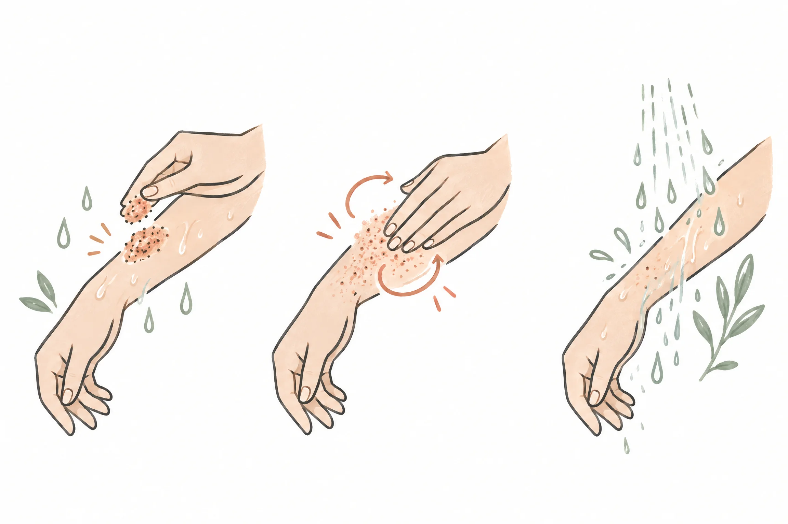

Aplicación paso a paso

- Leé la etiqueta para confirmar en qué zonas se puede usar y con qué frecuencia.
- Con la piel húmeda, tomá una pequeña cantidad y masajeá con movimientos circulares suaves, sin insistir sobre una misma zona.
- Enjuagá bien y secá la piel con toques, sin frotar.
Cuándo conviene esperar
No lo apliques sobre piel lastimada, irritada, recién afeitada o con molestias. Evitá el rostro, salvo que el producto indique expresamente que es apto para esa zona. Si nunca lo usaste, empezá de a poco y observá cómo te resulta.
Después de usarlo
Enjuagá cualquier resto de producto y seguí con los pasos habituales de tu rutina. Si aparece una molestia o irritación, dejá de usarlo y consultá con un profesional de salud si no mejora.